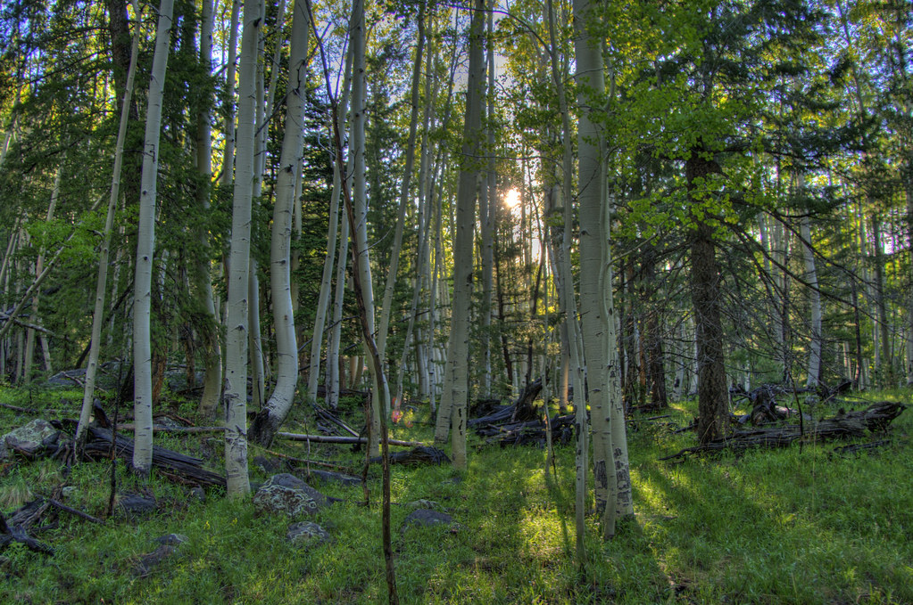
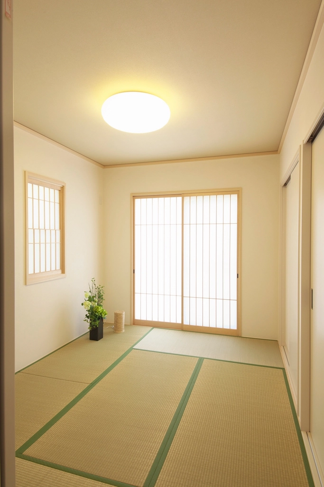
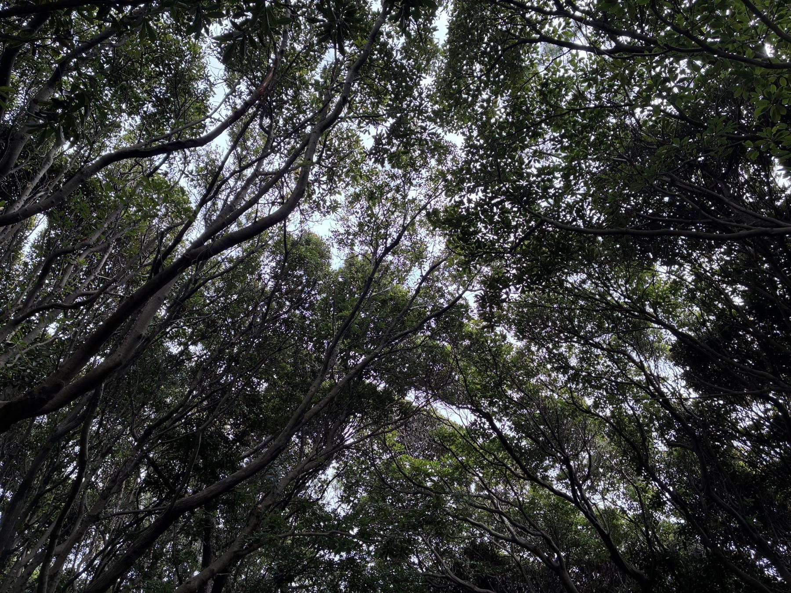

moksaについて
静岡県南伊豆町、山あいにひっそりと佇む一軒。moksaという名前には、サンスクリット語で「解脱」「解放」という意味があるのだそうです。

Location南伊豆の山の中で
目の前に山が広がり、セミの声が響く。緑に囲まれたこのロケーションに、気持ちが良いという声が多く聞かれます。
山道を進んだ先にふっと現れる一軒。たどり着くまでの道のりも含めて、ここでの時間の一部なのかもしれません。


Space
古民家の空気、手作りの居心地
古民家的なスペースに、手作り感のあるセンスの良い空間が広がっているようです。座敷もあり、いつまでもそこにいられそう、という声も聞かれます。
窓からは木々の緑が見え、店内には素敵な音楽が静かに流れている、という声も。山の空気と音楽、そしてコーヒーの香りが、ゆっくりと時間を満たしていくような場所です。
moksa
moksa、解き放たれる時間
moksaは、サンスクリット語で「解脱」「解放」を意味する言葉だといいます。訪れた方のクチコミに、そう教えていただきました。
山の中で、何もしなくていい時間を持っていると、なんとなく「ま、いっか」と思えてくる──そんな声もありました。
何かを成し遂げるための時間ではなく、ただそこにいるための時間。moksaという名前は、その静かなひとときを、そっと言葉にしてくれているようです。
山あいの一軒へ、どうぞ。